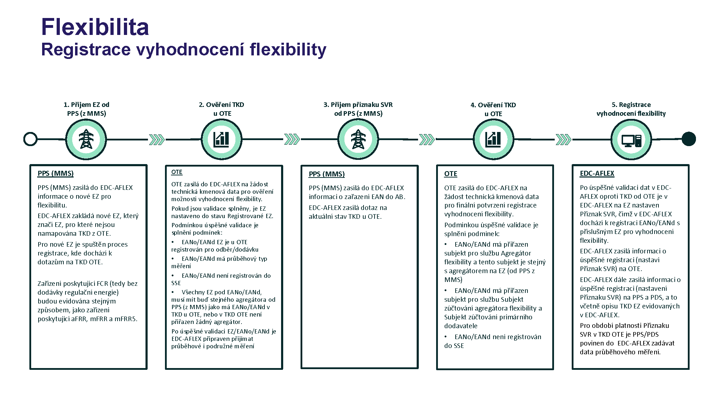
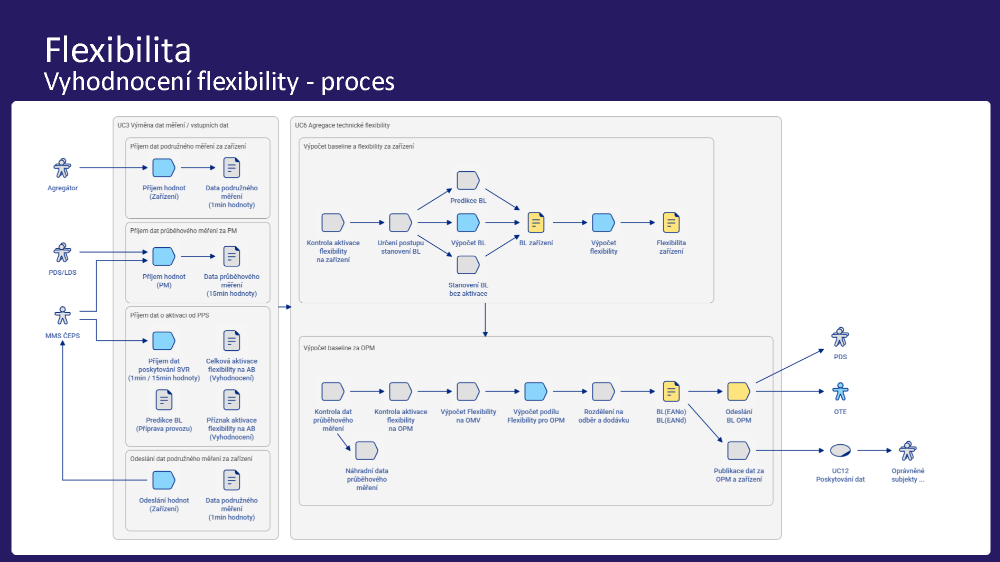
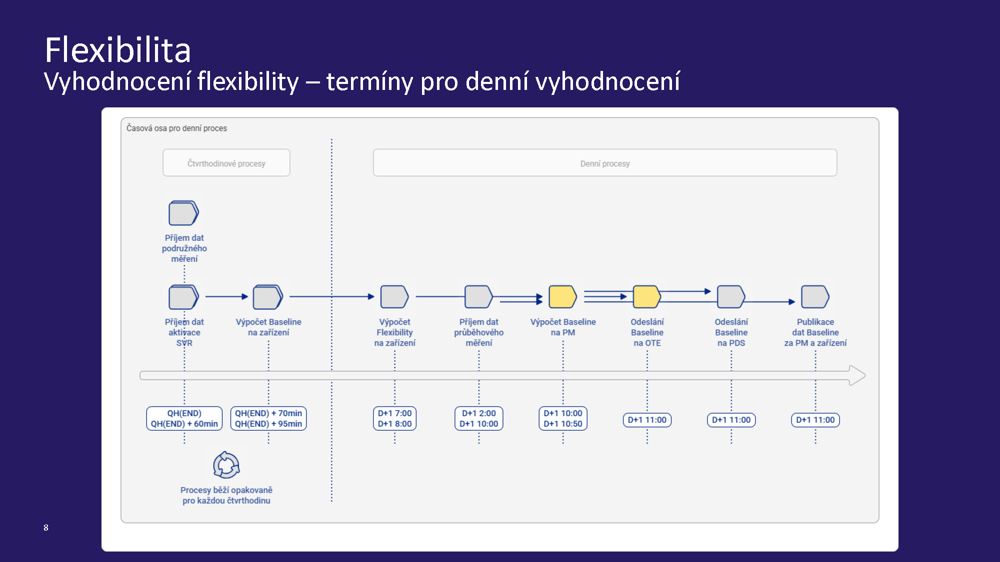
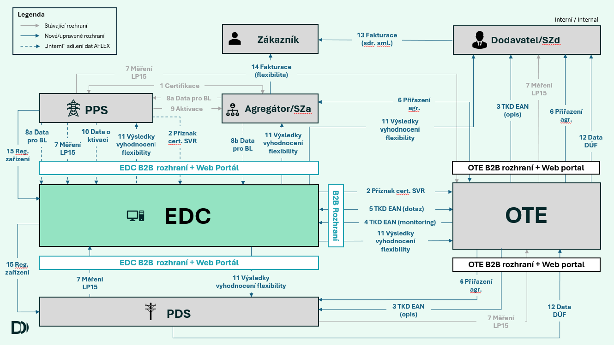

<section class="aktuality">
    <div class="container">
        <h1>Technická flexibilita a agregace v energetice</h1>
        
        <h2>Co je energetická a technická flexibilita</h2>
        <p>Energetická flexibilita je schopnost energetického systému přizpůsobit výrobu, spotřebu nebo akumulaci energie aktuálním potřebám sítě a trhu. Jde o to, aby se nabídka energie dynamicky přizpůsobila poptávce a zároveň byly respektovány technické limity soustavy.</p><br>
        <p>Technická flexibilita je konkrétní technická schopnost zařízení nebo souboru zařízení rychle a řízeně měnit svůj odběr, výrobu nebo tok energie v rámci daných mezí. Příkladem je kogenerační jednotka, průmyslový provoz, bateriové úložiště nebo řízené nabíjení elektromobilů, které mohou svůj výkon upravovat podle signálu z dispečinku nebo agregátora.</p><br>

        <h2>K čemu slouží UC Agregace flexibility</h2>
        <p>„UC Agregace flexibility“ slouží k registraci všech poskytovatelů „technické“ flexibility (poskytovatelů SVR a RE) a zohlednění aktivace této flexibility (flexibility, při které dochází k dodávce regulační energie) s využitím tzv. „korekčního modelu“ do podkladů pro výpočet odchylek a podkladů pro fakturaci (DÚF).</p><br>

        <h3>Odchylky</h3>
        <ul>
            <li>Za sjednané hodnoty dodávek u agregátora/poskytovatele flexibility (jeho SZ) při aktivaci „technické“ flexibility budou použity provozovatelem přenosové soustavy (PPS) předané hodnoty regulační elektřiny.</li>
            <li>Za skutečné hodnoty dodávek u agregátora/poskytovatele flexibility (jeho SZ) při aktivaci „technické“ flexibility budou použity hodnoty flexibility PM předané OTE z IS EDC-AFLEX.</li>
            <li>Za skutečné hodnoty dodávek u obchodníka/dodavatele (jeho SZ) při aktivaci „technické“ flexibility budou použity hodnoty výchozích diagramů (tzv. „Baseline“) PM předané OTE z IS EDC-AFLEX.</li>
        </ul><br>

        <h3>Fakturace (DÚF)</h3>
        <ul>
            <li>Fakturace dodávek SE obchodníkem/obchodníkovi (za dodávku SE obchodníkem odebranou z PS nebo DS a SE dodanou obchodníkovi z PM).</li>
            <li>Je nezbytné v době aktivace „technické“ flexibility zohlednit tuto aktivovanou flexibilitu, tj. fakturuje se nikoliv na základě hodnot z „fakturačního“ měřidla, ale na základě hodnoty výchozích diagramů PM.</li>
            <li>V připravované tarifní struktuře VVN a VN by se v době aktivace „technické“ flexibility měla použít namísto hodnoty naměřené hodnota výchozího diagramu dodávky.</li>
        </ul><br>

        <h2>Okrajové podmínky</h2>
        <ul>
            <li>Od 1. 8. 2026 probíhá zohledňování pouze technické flexibility (flexibility s dodávkou RE), jak stanovuje energetický zákon (EZ).</li>
            <li>EAN PM, ve kterém je zohledňována poskytovaná flexibilita, nesmí být přiřazen do skupiny sdílení pro zohlednění sdílení elektřiny.</li>
            <li>Zohledňování poskytnuté flexibility se provádí na všech EAN PM, ve kterém je zařízení pro poskytování flexibility připojeno, když registrace pro zohledňování flexibility probíhá prostřednictvím EANo.</li>
            <li>Fakturační měření v PM se zohledněním flexibility musí být průběhové s granularitou 15 min.</li>
            <li>Podružné měření zařízení poskytující flexibilitu musí mít granularitu 1 min.</li>
            <li>Agregátor/přímý PoFL má s ČEPS uzavřenou Rámcovou dohodu o podmínkách nákupu a poskytování SVR.</li>
            <li>Agregátor/přímý PoFL má zajištěn přístup do IS EDC-AFLEX prostřednictvím automatické komunikace.</li>
        </ul><br>

        <h2>Další podstatné premisy</h2>
        <h3>Poskytovatel SVR = Agregátor i Přímý poskytovatel SVR</h3>
        <ul>
            <li>Registrace a vyhodnocení flexibility v systému IS EDC-AFLEX probíhá jednotně pro EAN PM, na nichž je flexibilita pro SVR poskytována prostřednictvím agregátora nebo přímo.</li>
            <li>Přiřazení agregátora nebo přímého poskytovatele SVR provádí OTE, IS EDC-AFLEX se tohoto procesu neúčastní a informaci získává od OTE jako součást kmenových dat EAN PM.</li>
            <li>Přiřazení subjektu zúčtování (SZ) odpovědného za odchylku aktivované technické flexibility (RE z aktivace SVR) probíhá v CS OTE, IS EDC-AFLEX informaci získává od OTE jako součást kmenových dat EAN PM.</li>
        </ul><br>
        
        <h3>Migrace dat a přerušení vyhodnocování</h3>
        <ul>
            <li>Přiřazení stávajících poskytovatelů SVR u OTE proběhne standardními procesy v průběhu srpna 2026, aby nemusela být řešena migrace dat. Zahájení zohledňování aktivované flexibility pro dodávku RE bude zahájeno od 1. 9. 2026.</li>
            <li>Pokud IS EDC-AFLEX obdrží od OTE informaci o nepřiřazení některého z poskytovatelů služeb (primárního Dodavatele, SZ dodavatele, Agregátora/přímého poskytovatele flexibility, SZ za aktivaci flexibility) k danému EAN, ukončuje přiřazení příznaku „SVR-EDC“ v IS OTE a přestává vyhodnocovat flexibilitu.</li>
            <li>Po obdržení informace od OTE o opětovném přiřazení všech poskytovatelů služeb znovu začíná vyhodnocovat zohlednění aktivované flexibility.</li>
        </ul><br>

        <h2>Kroky předcházející registraci vyhodnocení flexibility v EDC</h2>
        <p>Poskytovatelem SVR vůči ČEPS může být buď přímý poskytovatel SVR, nebo agregátor (výhradně jeden subjekt na EAN). Každý poskytovatel má s ČEPS uzavřenou Rámcovou dohodu.</p><br>
        
        <h3>Na straně ČEPS:</h3>
        <ul>
            <li>Zájemce předloží ČEPS studii a dokumenty požadované Kodexem PS.</li>
            <li>Po schválení studie uzavře s ČEPS Rámcovou dohodu.</li>
            <li>Po splnění testů se stane Poskytovatelem SVR.</li>
            <li>ČEPS v systému OTE registruje virtuální EAN PM pro vykazování RE a informuje Poskytovatele, aby si zajistil přiřazení SZ.</li>
        </ul><br>

        <h3>Na straně OTE:</h3>
        <ul>
            <li>Poskytovatel uzavírá s OTE smlouvu o zúčtování regulační energie a zajistí přiřazení SZ na virtuálních EAN PM.</li>
            <li>Poskytovatel u OTE na fyzických EAN PM spouští proces přiřazení agregátora, jehož součástí je i přiřazení SZ zodpovědného za odchylku.</li>
        </ul><br>

         <br>

         <br>

         <br><br><br>

        <h2>Registrace vyhodnocení flexibility</h2>
        <ul>
            <li><strong>PPS (MMS):</strong> Zasílá do EDC-AFLEX informace o novém evidenčním zařízení (EZ). EDC-AFLEX zakládá nové EZ a spouští proces registrace s dotazy na technická kmenová data (TKD) OTE. Zařízení poskytující FCR budou evidována stejným způsobem jako aFRR, mFRR a mFRR5.</li>
            <li><strong>OTE (Ověření TKD):</strong> Zasílá do EDC-AFLEX technická data pro ověření. Podmínkou úspěšné validace je, že EANo/EANd je registrován pro odběr/dodávku, má průběhový typ měření, není registrován do sdílení elektřiny (SSE) a má správného agregátora. Po úspěšné validaci je systém připraven přijímat měření.</li>
            <li><strong>PPS (MMS) - zařazení do AB:</strong> Zasílá informaci o zařazení EAN do agregačního bloku (AB) a EDC-AFLEX zasílá dotaz na aktuální stav do OTE.</li>
            <li><strong>OTE - finální potvrzení:</strong> Zasílá kmenová data pro finální potvrzení. EANo/EANd musí mít přiřazeného agregátora, SZ agregátora a SZ primárního dodavatele.</li>
            <li><strong>EDC-AFLEX (Registrace):</strong> Po úspěšné validaci je nastaven „Příznak SVR“. Informace se zasílá na OTE, PPS a PDS. Pro toto období je PPS/PDS povinen do EDC-AFLEX zadávat data průběhového měření.</li>
        </ul><br>

        <h2>Předávání a příjem dat</h2>
        
        <h3>Fakturační měření (od PDS/PPS)</h3>
        <p>Za účelem vyhodnocení předává PDS/PPS do IS EDC-AFLEX denně do 10:00 následujícího dne čtvrthodinové hodnoty průběhového měření pro všechny EAN s nastaveným Příznakem SVR. Je umožněn příjem opravných dat. Pro chybějící data stanoví IS EDC-AFLEX náhradní hodnoty.</p><br>

        <h3>Podružné měření (od Poskytovatele SVR)</h3>
        <p>Předává se u zařízení pro ukládání elektřiny, výrobních modulů do 1,5 MW nebo zařízení certifikovaných pro aFRR/mFRR z více PM. Předávají se pro čtvrthodiny poskytování SVR (a s přesahem před/po). Data mají granularitu 1 min. Zahrnují výkon (kW), příznak aktivace a označení AB. Musí být předána do 1 hodiny po konci čtvrthodiny s aktivací. Systém je validuje vůči maximálnímu/minimálnímu výkonu.</p><br>

        <h3>Příjem dat od PPS (aktivace a predikce)</h3>
        <ul>
            <li>PPS předává příznak aktivace SVR na agregačním bloku (1 min granularita) a velikost aktivované SVR (15 min granularita).</li>
            <li>PPS předává predikci výkonu pro velká zařízení (nad 1 MW) nebo zařízení agregačního bloku pro více PM. Předává se poslední platná hodnota nejpozději 21 min před danou čtvrthodinou.</li>
        </ul><br>

        <h2>Stanovení výchozího diagramu a dodané flexibility</h2>
        <ol>
            <li><strong>Pro zařízení mimo agregační blok pro více PM:</strong> PPS předává do EDC-AFLEX rovnou čtvrthodinové hodnoty dodané flexibility. Pro tato PM není určován výchozí diagram.</li>
            <li><strong>Pro zařízení v agregačním bloku z více PM:</strong> 
                <br>a. Výchozí diagram se stanoví buď z predikce výkonu, nebo (při typu „před-po“) jako průměr hodnot měření v minutách bez příznaku aktivace. Pokud data chybí, provádí se lineární interpolace, případně se dosadí náhradní hodnota.
                <br>b. Dodaná flexibilita se spočítá jako rozdíl hodnot podružného měření a výchozího diagramu.
            </li>
            <li><strong>Za předávací místo (PM):</strong> Vypočte se suma dodané flexibility.</li>
            <li><strong>Rozpad na EANo a EANd:</strong> Na základě dat průběhového měření stanoví IS EDC-AFLEX hodnoty dodané flexibility pro směr dodávky i odběru (min/max funkce) a dopočítá finální výchozí diagramy. U FCR je dodaná flexibilita rovna 0.</li>
        </ol><br>

        <h2>Poskytování dat dodané flexibility a výchozích diagramů</h2>
        <p>IS EDC-AFLEX denně odesílá do IS OTE a na relevantní PDS/PPS data výchozích diagramů a dodané flexibility. Přístup k datům mají:</p>
        <ul>
            <li><strong>PPS:</strong> pro všechny EAN a zařízení s příznakem SVR.</li>
            <li><strong>PDS:</strong> pro relevantní EAN ve svém území.</li>
            <li><strong>Dodavatel a jeho SZ:</strong> k datům výchozích diagramů a průběhového měření pro relevantní EAN.</li>
            <li><strong>Poskytovatel SVR a jeho SZ:</strong> k datům výchozích diagramů, flexibility i měření pro relevantní zařízení.</li>
        </ul><br>

        <h2>Kroky navazující na vyhodnocení</h2>
        <ul>
            <li><strong>Na straně ČEPS:</strong> Určuje objem RE a výsledky (verze V0, V1, V2) předává do OTE na virtuální EAN.</li>
            <li><strong>Na straně OTE:</strong> Provádí finanční vypořádání poskytnuté RE a vyhodnocení odchylek. U SZ v intervalech s aktivací zohledňuje výchozí diagramy.</li>
            <li><strong>PDS a Dodavatel:</strong> PDS provádí fakturaci služby DS stávajícím způsobem z dat měření, při fakturaci překročení rezervované kapacity zohledňuje aktivovanou flexibilitu. Dodavatel nefakturuje silovou elektřinu podle naměřených hodnot, ale podle výchozího diagramu.</li>
        </ul><br>

        <h2>Vybrané klíčové předpoklady k potvrzení</h2>
        <ul>
            <li><strong>Uzávěra pro příjem dat:</strong> Dodatečné předání nebo oprava podružných dat po jedné hodině nejsou možné. Reklamace znamenají případný manuální přepočet metodou "Před a Po".</li>
            <li><strong>Periody vyhodnocení flexibility:</strong> Vyhodnocení probíhá jen ve čtvrthodinách s aktivovanou službou. Ve čtvrthodinách, kdy agregátor aktivuje z důvodu držení pracovního bodu agregačního bloku, se flexibilita nevyhodnocuje.</li>
            <li><strong>Přetržky:</strong> EDC-AFLEX nebude řešit zpětné přiřazení Dodavatele a SZ. Pravděpodobně bude vyhodnocovat flexibilitu bez ohledu na to, zda tam dodavatel zrovna přiřazen je, či není.</li>
        </ul><br><br>

         <br>

    </div>
</section>
